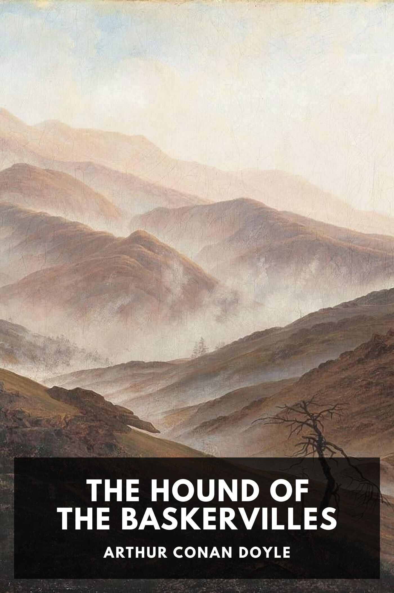
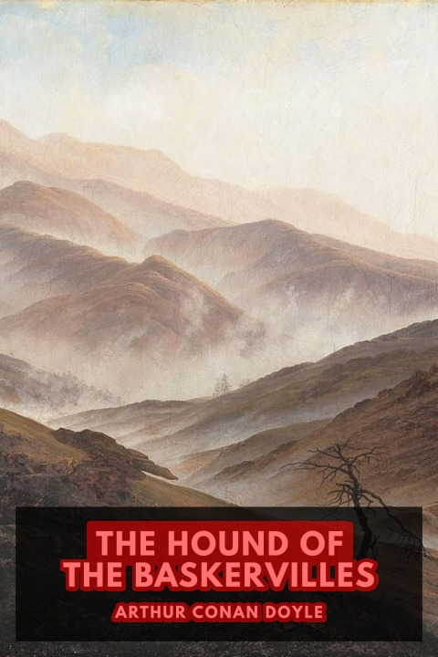
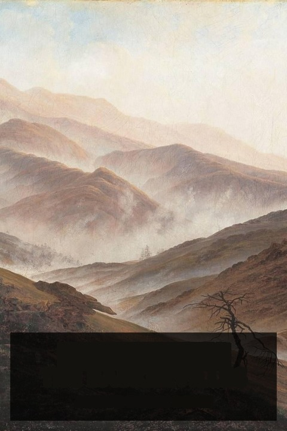
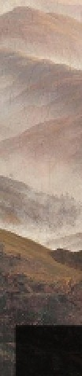
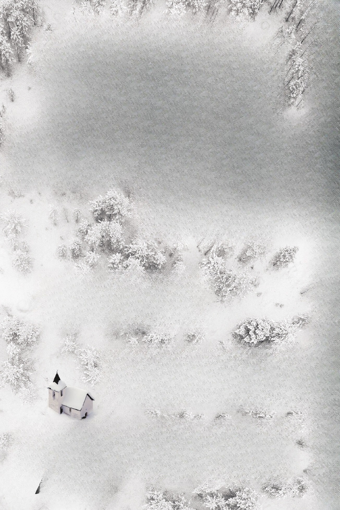

A cover goes in, a textless spine comes out. PP-OCRv3 DBNet finds the type, an automatic colour-and-line mask covers it, LaMa big-lama plus a sampled flat fill reconstruct the art, and a spine-scale QA pass chooses between reconstruction, a text-free crop, and an honest fallback.
Books tested5
Pass / review / fallback4 / 1 / 0
Manual mask points0
API keys0
ComputeCPU only
One book, four steps
The shared random book, run end to end.

1 · Original

2 · Automatic mask

3 · Inpainted art

4 · Spine 2×
The automatic stack
All local, all keyless.
01 · detect
DBNet, not polygons
PP-OCRv3 DBNet proposals at a 1600 px minimum side. Large display type, small marketing text and rotated side bands all arrive as boxes.
02 · mask
Colour + line completion
For each box, sample the dominant type colour inside its polygon. Grow colour-similar components in a small ROI, then fill missing glyphs from the line's own hue/value model.
03 · remove
Flat fill, then LaMa
Flat rings are filled with their median colour. Textured areas go through LaMa big-lama at 720 px on the CPU. No diffusion model, no external Space, no credential.
04 · decide
Crop first, inpaint second
A spine-aspect integral-image scan looks for a zero-text window. If one exists, use the real pixels. Otherwise use the reconstruction. QA measures residual OCR, seams, palette and structure at 52 × 236.
Pass / review / fallback
Judged at spine size, not full-cover fidelity.
Book
Route
Mask
OCR
Luma σ
Edge
Runtime
Verdict
The Hound of the Baskervilles
text-free crop
7.65%
0
56.29
0.0863
10.26 s
pass
Rock Paper Scissors
inpaint
40.05%
0
45.44
0.2084
29.42 s
review
Harry Potter and the Philosopher's Stone
text-free crop
37.4%
0
45.01
0.2388
28.38 s
pass
The Hunger Games
text-free crop
26.02%
0
54.35
0.116
23.93 s
pass
The Whisper Man
text-free crop
14.07%
0
40.87
0.2041
31.94 s
pass
Read the route. A pass can come from real pixels: Harry Potter and The Hunger Games never need their title field reconstructed. Rock Paper Scissors has type across the full width, so it is inpainted; the text is gone, but the resulting snow strip is a review, not a pass. That is the honest boundary.
The runs
Original → automatic mask → inpainted art → spine.
Detected text: “NEW YORK TIMESBESTSELLER”, “ALICE”, “THE MILLIOn-COPY”, “FEENEY”, “"Feeney lives up to her reputation”, “as the 'queen of the twist:'”, “This page-turner will keep you guessing."”, “-REALSIMPLE” …
Model: PP-OCRv3 DBNet (rapidocr_onnxruntime, ONNX, CPU) → LaMa big-lama (simple-lama-inpainting, CPU) + sampled flat fill. Diffusion: not used.
Compare with the manual / LaMa baseline

Manual / LaMa artBaseline spine (resized to 52 × 236)
Why pass: zero mask coverage, no residual OCR, structure at spine scale
Detected text: “THE SUNDAYTIMES BESTSELLER”, “IF YOU LEAVE A DOOR HALF-OPEN,”, “SOON YOU'LL HEAR THE WHISPERS SPOKEN”, “The best”, “crime novel of”, “the decade'”, “Steve”, “Cavanagh” …
Model: PP-OCRv3 DBNet (rapidocr_onnxruntime, ONNX, CPU) → LaMa big-lama (simple-lama-inpainting, CPU) + sampled flat fill. Diffusion: not used.
What the QA actually checks
Numbers are in audit.json and each assets/<slug>/qa.json.
Residual OCR
PP-OCRv3 runs on the full art, the native crop and a 4× spine upscale. Any readable hit above confidence 0.5 is a fallback for the spine.
Mask coverage
>40% reconstructed is review; >55% is fallback. Large masks are where LaMa invents the most.
Seam + colour
Boundary gradient ÷ local ring gradient. >3× is review. Mean ΔE between the filled region and its ring catches colour drift.
Spine structure
Luma σ, edge density, non-dark percentage and palette correlation against the source. Palette is advisory; a detail crop (Harry Potter’s train) can legitimately differ. A clean but empty strip is a fallback.
Where it stops
Honest boundaries, not tuning problems.
RPS · review
Type covers the full width, so there is no text-free strip. The 40% reconstruction is OCR-free, but the resulting snow spine is generic. It matches the manual baseline's weakness.
LOTR · design reject
A stress run passes the structural QA because the ring script survives, but no object carries the book at 52 px. The pipeline cannot measure recognisability; do not treat a pass as a design sign-off.
Full-cover art
Harry Potter's title field and The Whisper Man's badge circles show obvious LaMa invention. The spine crop hides them; the full-cover file is not a clean cover.
In-art lettering
DBNet cannot tell cover type from the Hogwarts Express sign or the 9¾ platform sign. v8 removes both. A semantic classifier is future work.
Manual intervention
Counted per run.
0
No polygons, no clicked points, no per-book model prompt, no API key. The input is a cover and optional title/author/page count. Every mask comes from detection plus automatic colour analysis.
python tools/auto_pipeline.py \
--cover ../reproducibility/book/cover.jpg \
--slug hound \
--title "The Hound of the Baskervilles" \
--author "Arthur Conan Doyle" --pages 170 \
--out assets
Full commands, model weights and licences are in README.md; the research trail is in RESEARCH.md.